Настройки
Esc — освободить курсор, чтобы менять поля
Q – менять стиль движения
С – вид машины сбоку / сверху

3D-бродилка от первого лица по реальной карте. Гуляй между зданий, взлетай и осматривайся.